2
初登場
▶
2
初登場
▶
「ストリートファイターリーグ JAPAN 2026」Division S 第8節 ☆☆18時40分より初心者必見！SFリーグ: ウォームアップ☆☆
Capcom Fighters JP · 1,045,567再生 · 公開 11/13
2
初登場
▶
Capcom Fighters JP · 1,045,567再生 · 公開 11/13
 4
→
▶
4
→
▶
日常組 · 541,624再生 · 公開 11/13
 6
初登場
▶
6
初登場
▶
ドズル社 · 329,940再生 · 公開 11/13
 8
▼6
▶
8
▼6
▶
東海オンエア · 1,722,502再生 · 公開 11/12
 9
初登場
▶
9
初登場
▶
Stray Kids Japan Official YouTube · 282,842再生 · 公開 11/13
 10
▼4
▶
10
▼4
▶
キヨ。 · 1,357,421再生 · 公開 11/12
 11
初登場
▶
11
初登場
▶
KEY TO LIT · 132,661再生 · 公開 11/13
 12
▼4
▶
12
▼4
▶
カラフルピーチ · 265,098再生 · 公開 11/13
 14
初登場
▶
14
初登場
▶
狩野英孝【公式チャンネル】EIKO!GO!! · 325,358再生 · 公開 11/13
 16
初登場
▶
16
初登場
▶
鈴原るる【にじさんじ所属】 · 146,310再生 · 公開 11/14
 17
▼10
▶
17
▼10
▶
AKB48 · 114,232再生 · 公開 11/13
 18
▼4
▶
18
▼4
▶
らっだぁ · 201,228再生 · 公開 11/13
 20
初登場
▶
20
初登場
▶
藍沢エマ / Aizawa Ema · 312,913再生 · 公開 11/13
 22
▲18
▶
22
▲18
▶
ハヤトの野望 · 141,908再生 · 公開 11/13
 23
初登場
▶
23
初登場
▶
syudou · 58,909再生 · 公開 11/13
 24
初登場
▶
24
初登場
▶
Pekora Ch. 兎田ぺこら · 372,220再生 · 公開 11/13
 25
▼4
▶
25
▼4
▶
shishamoofficial · 46,293再生 · 公開 11/13
 26
初登場
▶
26
初登場
▶
社築 · 224,872再生 · 公開 11/14
 28
▲6
▶
28
▲6
▶
いぬけん · 108,878再生 · 公開 11/13
 29
▼18
▶
29
▼18
▶
なにわ男子 · 192,612再生 · 公開 11/12
 30
▲8
▶
30
▲8
▶
ターシーさおぴかチャンネル · 170,762再生 · 公開 11/13
 32
初登場
▶
32
初登場
▶
令和ちゃんねる · 130,113再生 · 公開 11/13
 33
初登場
▶
33
初登場
▶
Chogakusei Official · 49,383再生 · 公開 11/13
 34
▼22
▶
34
▼22
▶
今日ポケch. · 503,964再生 · 公開 11/12
 36
初登場
▶
36
初登場
▶
長尾 景 / Nagao Kei【にじさんじ】 · 163,676再生 · 公開 11/14
 37
▼22
▶
37
▼22
▶
WAY2WAY · 98,895再生 · 公開 11/12
 38
初登場
▶
38
初登場
▶
Miko Ch. さくらみこ · 403,609再生 · 公開 11/14
 40
初登場
▶
40
初登場
▶
がみくん · 136,642再生 · 公開 11/13
 42
初登場
▶
42
初登場
▶
hololive ホロライブ - VTuber Group · 364,644再生 · 公開 11/13
 43
初登場
▶
43
初登場
▶
Lantis Channel · 12,803再生 · 公開 11/13
 44
▼34
▶
44
▼34
▶
モンスト（モンスターストライク）公式 · 600,355再生 · 公開 11/12
 46
▼30
▶
46
▼30
▶
牛沢 · 761,803再生 · 公開 11/12
 48
初登場
▶
48
初登場
▶
ライキジョーンズ · 194,213再生 · 公開 11/14
 50
初登場
▶
50
初登場
▶
【V.I.P】 · 129,963再生 · 公開 11/13
 1
初登場
▶
1
初登場
▶
ZORN Official · 292,006再生 · 公開 11/13
 3
初登場
▶
3
初登場
▶
ちゃんみな [CHANMINA] · 257,561再生 · 公開 11/13
 5
初登場
▶
5
初登場
▶
中島健人 Official YouTube Channel · 203,842再生 · 公開 11/13
 7
初登場
▶
7
初登場
▶
HYBE LABELS · 1,407,426再生 · 公開 11/13
 13
▼8
▶
13
▼8
▶
A2O WORLD · 1,427,596再生 · 公開 11/13
 15
▼12
▶
15
▼12
▶
ICEx · 80,784再生 · 公開 11/13
 19
▼18
▶
19
▼18
▶
HOYO-MiX - Topic · 81,783再生 · 公開 11/13
 21
初登場
▶
21
初登場
▶
wacci OFFICIAL YouTube CHANNEL · 28,223再生 · 公開 11/13
 27
初登場
▶
27
初登場
▶
HIMEHINA Channel · 74,680再生 · 公開 11/13
 31
▼18
▶
31
▼18
▶
サンボマスター · 210,932再生 · 公開 11/12
 35
▼16
▶
35
▼16
▶
AKINA NAKAMORI OFFICIAL · 235,756再生 · 公開 11/12
 39
▼22
▶
39
▼22
▶
Kohjiya · 153,226再生 · 公開 11/12
 41
初登場
▶
41
初登場
▶
ばぁう【騎士Ⅹ】 · 15,286再生 · 公開 11/13
 45
初登場
▶
45
初登場
▶
Pxrge Trxxxper · 59,650再生 · 公開 11/13
 47
▼24
▶
47
▼24
▶
ふぉ〜ゆ〜ちゅ〜ぶ · 1,257,640再生 · 公開 11/11
 49
▼18
▶
49
▼18
▶
TMNETWORK · 152,575再生 · 公開 11/12
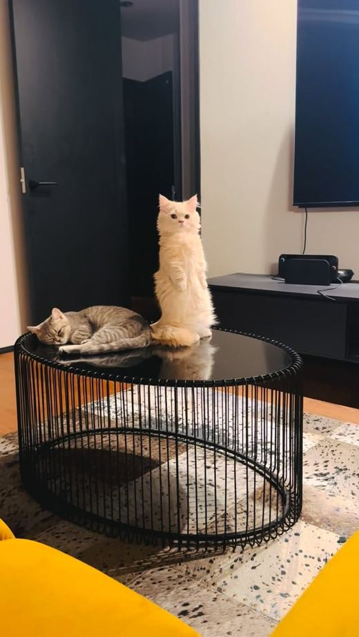
900万回ニコニコニュース · 12 Nov · @haruka___iy ♥1,125,854
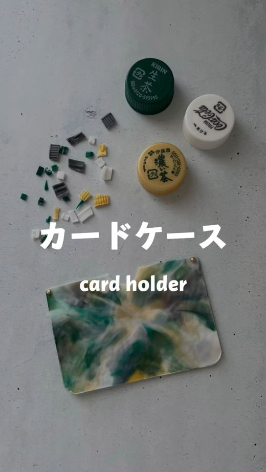
720万回 NEWねとらぼ · 13 Nov · @capakira_tokyo ♥129,860
 230万回
NEW
230万回
NEW
Yahoo!ニュース · 12 Nov · @makoto6017 ♥34,536
Infoseek · 12 Nov
ライブドアニュース · 12 Nov
オリコンニュース · 12 Nov
Excite エキサイト · 12 Nov
LIMO | くらしとお金の経済メディア · 12 Nov
Excite エキサイト · 12 Nov
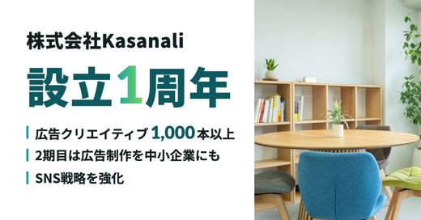
NEWPR TIMES · 13 Nov

Infoseek · 12 Nov · @century_words ♥153,893
Newscast.jp · 12 Nov · @alc1231 ♥4,097
ねとらぼ · 13 Nov · @labo.mama_handmade ♥1,287
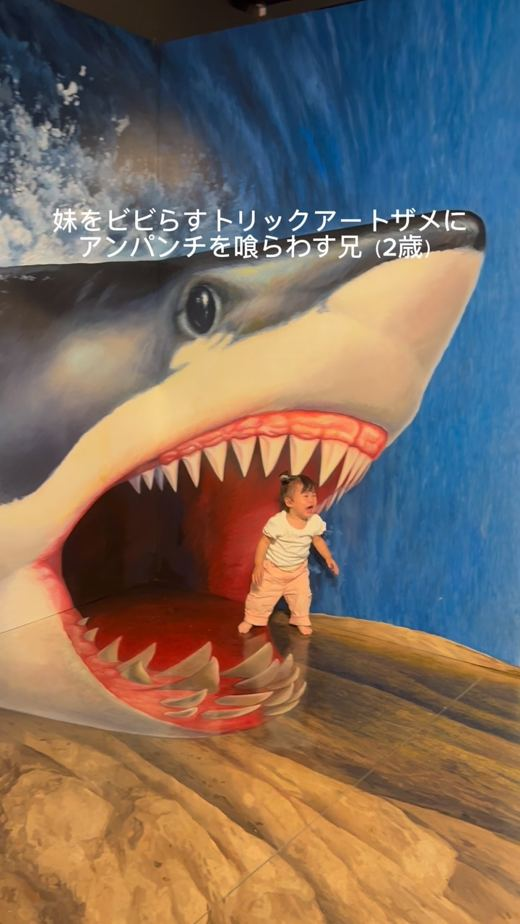
NEWInfoseek · 13 Nov · @umi_kotetsu ♥10,752
ライブドアニュース · 13 Nov
 117万回
117万回
Excite エキサイト · 12 Nov
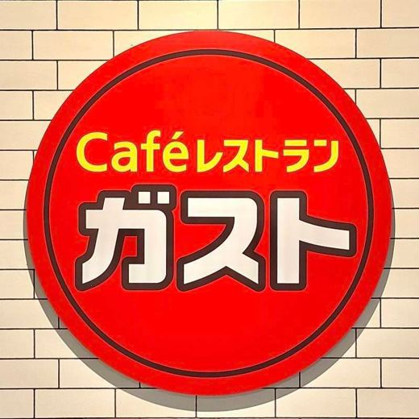
NEWTRILL · 13 Nov
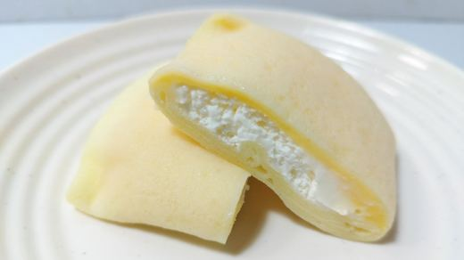
NEWYahoo!ニュース · 13 Nov
BuzzFeed · 13 Nov
Yahoo!ニュース · 13 Nov
au Webポータル · 13 Nov
TRILL · 13 Nov
Yahoo!ニュース · 13 Nov
au Webポータル · 13 Nov
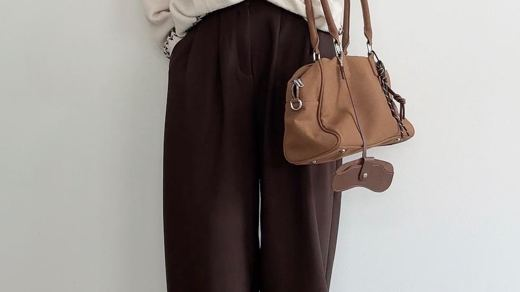
NEWYahoo!ニュース · 13 Nov
Web eclat · 13 Nov
ｄメニューニュース · 13 Nov
ヨムーノ · 13 Nov
TRILL · 13 Nov
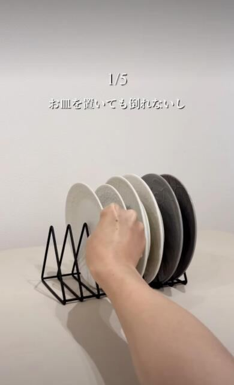
NEWｄメニューニュース · 13 Nov
BuzzFeed · 13 Nov
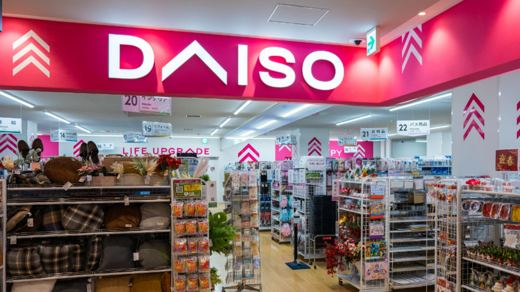
NEWAll About ニュース · 13 Nov
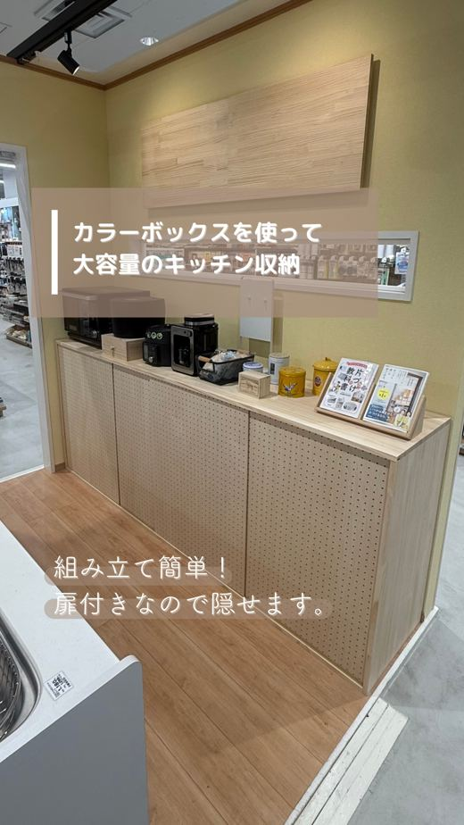
NEWニコニコニュース · 13 Nov · @dcmdiyplace_official ♥968
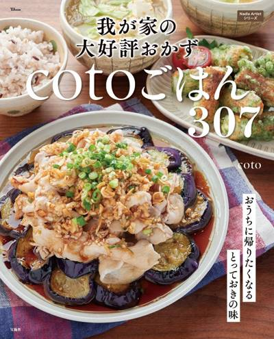
11/13 19:50 🗼 東京Nadia株式会社のプレスリリース 「やっぱりおうちのごはんが美味しい！」と家族に喜ばれる♪coto流おうちごはん術 Nadia
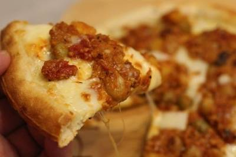
11/13 17:18 🗼 千葉学校法人佐野学園のプレスリリース ～牧場の自家産サツマイモとチーズを使用、「食」を通じた異文化体験を提案～ 神田外語大学（千葉市
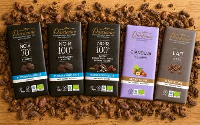
11/13 11:30 🗼 東京株式会社アルマテラのプレスリリース 1897年創業のフランス老舗メーカー「ダーデン」と、低GIのアガベシュガーを使用した「アルマ
株式会社鎌倉ハム富岡商会のプレスリリース “食卓に鼻歌を”新ブランド「KAMAKURA HAM&HUM 」始動 ハム・
株式会社ロッテのプレスリリース 株式会社ロッテ（東京都新宿区、代表取締役社長執行役員：中島英樹、以下ロッテ）はコアラのマーチブラ
株式会社SAKIGAKEホールディングスのプレスリリース 11月16日(月)から12月27日（日）まで、選べる2種類の期間限定商
東和フードサービス株式会社のプレスリリース 松戸産トマトの酸味と甘味が見事にマリアージュした、学生考案の特製トマトジャムが味の決
株式会社サンクゼールのプレスリリース 第1弾（11月20日〜23日）は税込2,000円以上のご購入で店内商品10%OFF（一部対
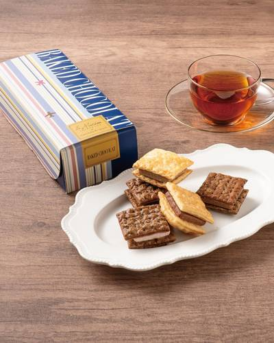
11/13 14:10 🚄 長野日本空港ビルデング株式会社のプレスリリース 日本空港ビルデング株式会社は、2026年11月15日(日)に羽田空港限定商品「ベイク
株式会社王将フードサービスのプレスリリース ～熱々・とろ旨の特選メニュー 「冬ラーメン」も好評発売中！～ 2026 大感謝祭 株
株式会社ブラスのプレスリリース 三井ショッピングパーク ららぽーと安城のバタリーではクリームたっぷりのパイ生地にいちごをあしらっ
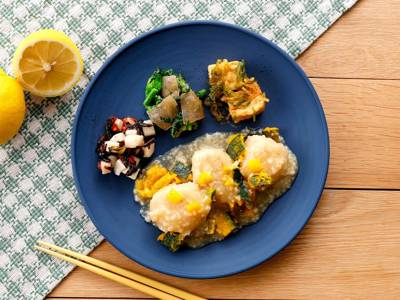
11/13 12:32 🚄 長野ナッシュ株式会社のプレスリリース 〜飽きずに・美味しく・楽しく健康的な食事を習慣化。新商品も続々と登場〜 当社は「毎日の生活を“
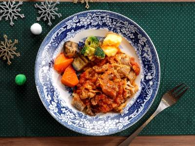
11/13 12:23 🚄 兵庫ナッシュ株式会社のプレスリリース 〜飽きずに・美味しく・楽しく健康的な食事を習慣化。新商品も続々と登場〜 当社は「毎日の生活を“
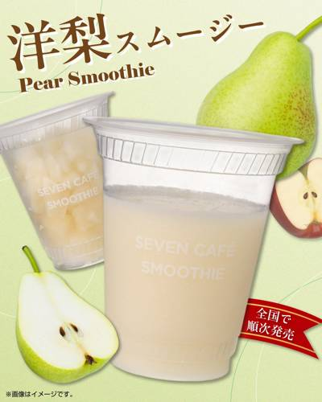
11/13 11:30 🚄 長野株式会社セブン‐イレブン・ジャパンのプレスリリース ～全国のセブン‐イレブン店舗にて11月17日（火）より順次発売～ 株式会社
株式会社 大丸松坂屋百貨店のプレスリリース ■大丸梅田店地１階西 和洋菓子売場 ■2026年12月１日（火）勢ぞろい！ 全国初・
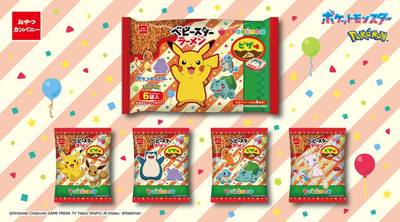
11/13 11:30 🚄 長野株式会社おやつカンパニーのプレスリリース 内袋パッケージは全4種類！どのデザインがでるかは開けてからのお楽しみ 株式会社おやつカ
株式会社プロントコーポレーションのプレスリリース 「2027ふくぶくろ」は11月15日予約開始、コラボメニューも12月26日より
株式会社ゼンショーホールディングスのプレスリリース 株式会社すき家（代表取締役社長：笹川 直樹 本社：東京都港区）が展開する牛丼
株式会社湖池屋のプレスリリース 100名様にキャラクターぬいぐるみが当たる！ 株式会社湖池屋（社長：佐藤章）は、国産じゃがいも1
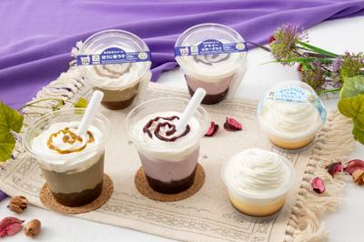
11/13 11:00 🚄 長野株式会社セブン‐イレブン・ジャパンのプレスリリース 〜ホッとひと息つく「自分時間」に寄り添う新作スイーツ〜 株式会社セブン‐イ
カルビー株式会社のプレスリリース 2026年11月23日（月）から全国のコンビニエンスストア先行で期間限定発売 カルビー株式会社
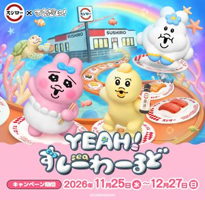
11/13 11:00 🚄 長野株式会社FOOD & LIFE COMPANIESのプレスリリース ＜11月25日（水）より全国のスシローにてコラボ開始
株式会社Cake.jpのプレスリリース 株式会社Cake.jp（本社：東京都新宿区、代表取締役：高橋 優貴）が運営するケーキ・ス
株式会社セブン‐イレブン・ジャパンのプレスリリース ～地域の子どもたちのアイデアを生かした商品をはじめ、中国エリア(※)で馴染み
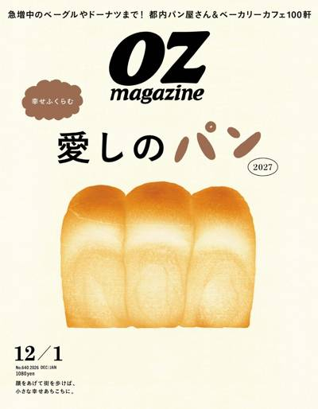
11/13 10:00 🚄 長野スターツ出版株式会社のプレスリリース 11 月10日(火)よりナチュラルローソンで発売／オズマガジン『愛しのパン2027』特集タ
ビッグクリエイト株式会社のプレスリリース 日本発・世界のドーナツ専門店『JACK IN THE DONUTS』から、ドーナツ×ベ
サッポロビール株式会社のプレスリリース 136本限定のシャンパンボトル仕様のビールに加え、バカラグラスで楽しめるクリスマス特別メ
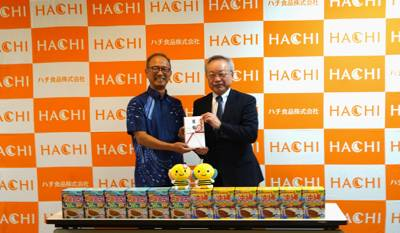
11/13 10:00 🚄 大阪ハチ食品株式会社のプレスリリース 2026年11月9日「おきなわアジェンダ21県民会議」への寄付金贈呈式を実施 ハチ食品株式会社
理研ビタミン株式会社のプレスリリース 理研ビタミン株式会社（本社：東京都新宿区、社長：望月敦）は、2026年11月より、株式会社
株式会社アンドエスティHDのプレスリリース NO COFFEEの人気キャラクターをモチーフにしたグロサリーや雑貨を展開するほか、
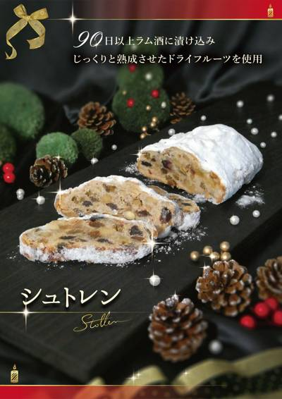
11/13 09:30 🚄 北海道株式会社レフボンのプレスリリース ～薄くスライスして深まる熟成を愉しむ。ホリデーシーズンを彩る贅沢な伝統の味～ 株式会社レフボン
株式会社講談社のプレスリリース おとなの週末 2026年12月号 今号の特集は「バーに遊ぶ。」。人生をほんの少しだけれど、煌めく
株式会社SANKO MARKETING FOODSのプレスリリース JR蒲田駅西口徒歩2分の“行列のできる”讃岐うどん店『うどん
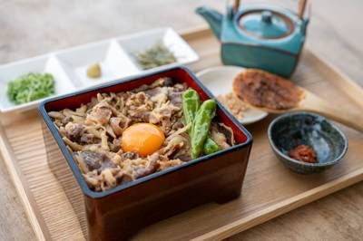
11/13 20:12 🚄 長野互恵株式会社のプレスリリース 西山大豆の味噌を使った牛まぶしと、信州の郷土料理を釜揚げスタイルで楽しむ、秋の新メニュー3品が登場
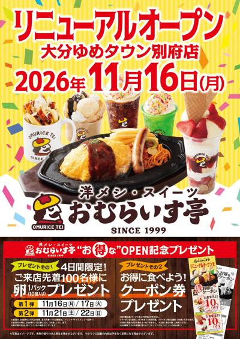
11/13 19:20 🚄 大分株式会社焼肉坂井ホールディングスのプレスリリース ～ お食事とスイーツの二刀流をお楽しみください ～ “ふわトロ” オムライスの
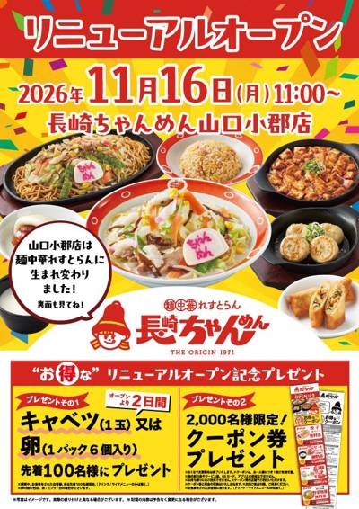
11/13 15:56 🚄 長崎株式会社焼肉坂井ホールディングスのプレスリリース ～ 11/16（月）・11/17（火）お得な記念プレゼントございます ～ 昭和
株式会社ドムドムフードサービスのプレスリリース 定番スタイルで食べる、肉感たっぷりなバーガーが再び登場！ 株式会社ドムドムフード
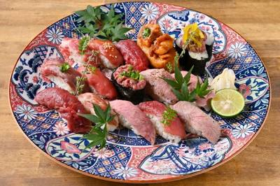
11/13 15:00 🗼 神奈川GOSSO株式会社のプレスリリース 焼肉でも、寿司でも、すき焼き専門店でもない。肉屋が新しく始める「肉寿司本家」 GOSSO株式
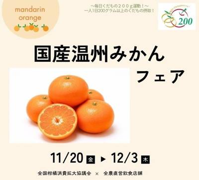
11/13 15:00 🗼 東京みのりみのるプロジェクトのプレスリリース ＪＡ全農は、全国の直営飲食店舗（１２店舗）で、１１月２０日（金）～１２月３日（木）の間
カッパ・クリエイト株式会社のプレスリリース コロワイドグループのカッパ・クリエイト株式会社（本社：神奈川県横浜市、代表取締役社
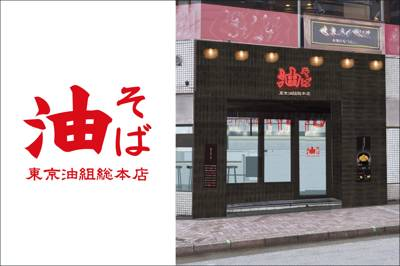
11/13 11:09 🗼 東京株式会社ホットランドホールディングスのプレスリリース ～ オープン2日間限定！「油そば」500円、「辛味噌油そば」600円の特別
ユキグニファクトリー株式会社のプレスリリース ユキグニファクトリー株式会社（本社：新潟県南魚沼市、代表取締役社長：湯澤尚史）は、
有限会社ケイワンのプレスリリース 2026年11月15日（日）より対象商品に限り全国一律送料800円（クール代込み）で配送できる
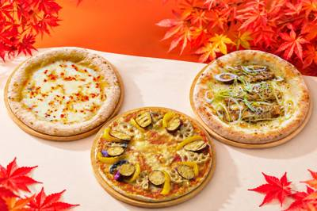
11/13 19:50 🚄 石川株式会社リエイのプレスリリース 金沢発の冷凍ピザブランド「モリナポ」（製造・販売 株式会社森山ナポリ：石川県金沢市三池町 代表取
全国農業協同組合連合会のプレスリリース ＪＡ全農が運営する産地直送通販サイトＪＡタウンのショップ「もぐもぐながさき」は、令和８
JA全農の産直通販JAタウンのプレスリリース TFM「ＪＡタウンまるかじり」で潮紗理菜さんと茂木建生さんが魅力を紹介 ＪＡ全農
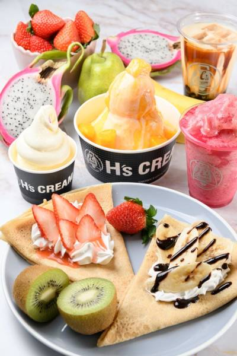
11/13 14:25 🚄 福島有限会社マンゴースィーツインターナショナルのプレスリリース 発酵バターと黒糖を使用した人気のクレープをはじめ、オープン記念のHA
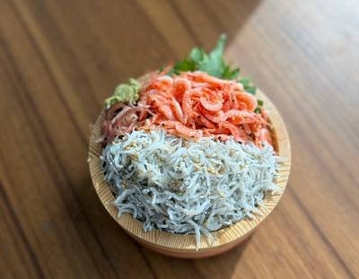
11/13 13:45 🚄 長野有限会社かね吉のプレスリリース 磐田市福田の水産加工・販売を行う「かね吉」(所在地：静岡県磐田市)は、日頃のご愛顧に感謝を込めま
SRSホールディングス株式会社のプレスリリース 北海道フェアの「おいしい時間」の次は、「旅する時間」を。アプリ・公式Xどちらから
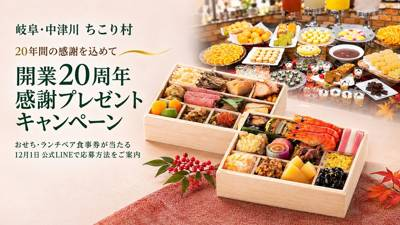
11/13 10:05 🚄 岐阜岐阜・中津川 ちこり村（株式会社サラダコスモ）のプレスリリース ～ちこり村公式LINEお友だち限定の特別企画～ 開業20周年感謝
愛知県のプレスリリース 開催期間：2027年2月15日（月）まで 一般社団法人とこなめ観光協会は、常滑市内の飲食店で提供される
株式会社出前館のプレスリリース 注文回数に応じて出前館限定グッズが当たるエントリーキャンペーンやSNS施策などを実施 株式会社
株式会社new classicのプレスリリース 約20年ぶりにお酒を口にした清春氏が「美味しい」と語った、音楽を聴かせて熟成する
株式会社美術出版エデュケーショナルのプレスリリース 東京都美術館にて開催される特別展「東京都美術館開館100周年記念 オルセー美
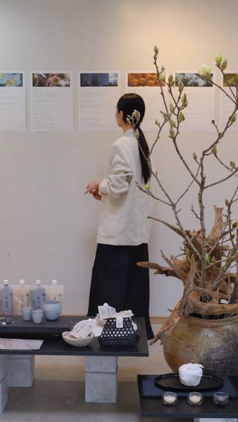
11/13 09:46 🗼 東京紬株式会社のプレスリリース 出産や子育てなど、ライフステージの変化によって働き方を見つめ直す女性たちへ。麹の知識やつくり方を基礎
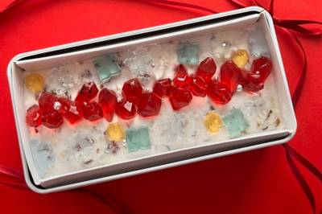
11/13 17:19 🚄 三重メルティングポットハラペコラボ株式会社のプレスリリース クリスマスの食卓に、食べられる宝石箱を。雪のように真っ白なアイスケーキに
株式会社ニジゲンノモリのプレスリリース ニジゲンノモリ公式ラグジュアリーヴィラ「GRAND CHARIOT 北斗七星135°」
ファーストキッチン株式会社のプレスリリース 11/20(金)から店頭予約&Web販売開始 ウェンディーズ・ジャパン株式会
株式会社アールディーシーのプレスリリース 保存料・着色料・甘味料不使用。埼玉県内のがってん寿司グループ全店で販売 株式会社アール
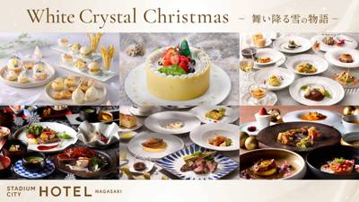
11/13 12:00 🚄 長崎株式会社 ジャパネットホールディングスのプレスリリース ～洋菓子の世界大会準優勝パティシエとのコラボレーションケーキ、純白の世界
KOZOホールディングス株式会社のプレスリリース KOZOホールディング株式会社の子会社である株式会社TBJが運営するアメリカ発
株式会社OkojoAIのプレスリリース 【2026年11月20日 クラウドファンディング開始】毎朝のコーヒータイムに、おこじょた
株式会社味とサイエンスのプレスリリース 11月18日（水）から30日（月）まで、阪急うめだ本店 9階「クリスマスマーケット」に出
 11/13 08:00
🚄 愛知
11/13 08:00
🚄 愛知
株式会社物語コーポレーションのプレスリリース 株式会社物語コーポレーション(本社:愛知県豊橋市/代表取締役社長:加藤 央之)が全
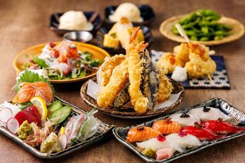
11/13 19:00 🗼 銀座株式会社ファンインターナショナルのプレスリリース ～東銀座駅4番出口すぐ。ランチから仕事帰りの一杯、会社の宴会まで使える、ちょう
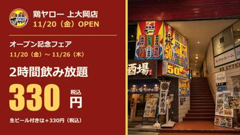
11/13 18:11 🗼 神奈川株式会社鶏ヤローのプレスリリース 地下鉄上大岡駅から徒歩約2分。横浜・港南区の第3ミツワビル2階に、仕事帰りや友人との集まりに立
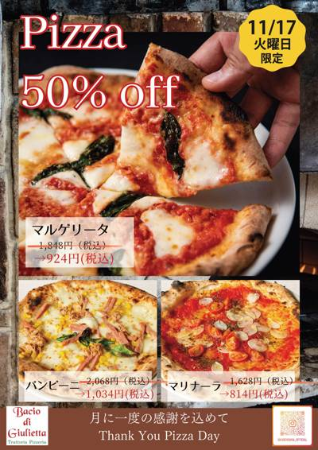
11/13 17:41 🗼 恵比寿株式会社焼肉坂井ホールディングスのプレスリリース ～ マルゲリータなど、ピッツァ3メニューが一日限りの半額！ ～ 歯ざわり良好な
株式会社ＢＳ日テレのプレスリリース １１月１６日（月）よる１０時～放送「ドランク塚地のふらっと立ち食いそば」～東京・旗の台 人生
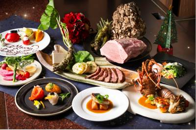
11/13 17:12 🗼 池袋東武食品サービス株式会社のプレスリリース 期間限定：2026年12月1日（火）～12月25日（金） 東武食品サービス株式会社（東
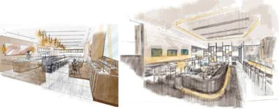
11/13 16:42 🗼 新宿株式会社フォンスのプレスリリース 新宿駅直結という高い利便性を有する“明治安田新宿ビル”の地下１階に、「THE CITY BAK
ワタミ株式会社のプレスリリース ワタミ株式会社が展開するワタミファームは、11月18日（水）株式会社信濃屋食品が運営する「虎ノ
横浜バニラ株式会社のプレスリリース そのままでも、あたためても。この冬、みんなで分け合いたい横浜みやげです。 ギフトスイーツブラ
株式会社吉野家ホールディングスのプレスリリース ばり嗎」待望の東京初出店 株式会社ウィズリンク（本社：広島県広島市、代表取締役社
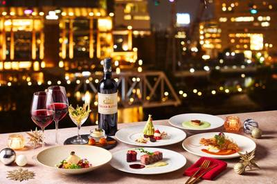
11/13 13:00 🗼 みなとみらいアニヴェルセル株式会社のプレスリリース – 12月19日(土)・20日(日)・24日(木)・25日(金)の4日間限定
ゴディバ ジャパン株式会社のプレスリリース ～2026年11月27日（金）より～ ゴディバ ジャパン株式会社（東京都港区）は、チ
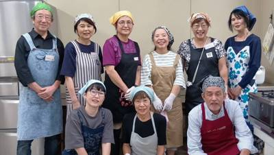
11/13 11:00 🗼 神奈川株式会社ジーバーのプレスリリース ～地域の暮らしを支えるエヌアセットグループとともに、シニアの新たな活躍と世代を超えたつながりが
株式会社大庄のプレスリリース 株式会社大庄（東京都大田区／代表取締役社長：平 了壽）は、浜焼き海鮮居酒屋『大庄水産』22店舗にて
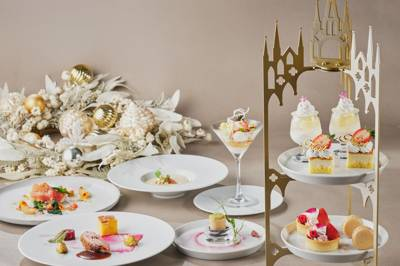
11/13 11:00 🗼 東京株式会社ツカダ・グローバルホールディングのプレスリリース 販売期間：2026年11月18日（水）～12月27日（日）／ St.
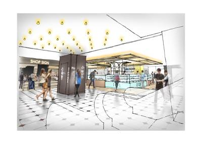
11/13 10:09 🗼 千葉株式会社千葉ステーションビルのプレスリリース 2026年12月17日（木）オープン 株式会社千葉ステーションビル（本社:千葉市
株式会社 ファイアーキッズのプレスリリース 東京都港区に本社を構え、横浜・中野・銀座でヴィンテージ時計（製造から長い年月を経た時
株式会社ペンギンのプレスリリース ペンギンベーカリーならではのクリスマスを彩る人気商品を揃えました！ 株式会社ペンギン（本社：北
株式会社ペンギンのプレスリリース ペンギンベーカリーならではのクリスマスを彩る人気商品を揃えました！ 株式会社ペンギン（本社：北
株式会社丹友商事のプレスリリース 2026年冬季限定。ホテル丹後に併設の割烹たんごが、オスの身とメスの内子・外子を味わうカニ料理
ロイヤルカナン ジャポン合同会社のプレスリリース ～小動物栄養学のデジタル教育プログラム「CASAN」を発表～ 栄養学に基づいて
アイコニア・ホスピタリティ株式会社のプレスリリース 「ホテルローレライ」（所在地：長崎県佐世保市、総支配人：石川桂、以下「当ホ
株式会社おいもやのプレスリリース 3～4人の家族で楽しめるサイズに変更。クリームで自由にデコレーションできる手作りケーキキット、
LR株式会社のプレスリリース ぼる塾が人気スイーツ作りの体験や、パワースポットで曽於市ダービー！？ LR株式会社（本社：鹿児島県
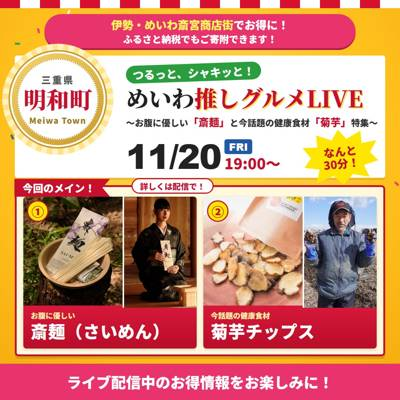
11/13 17:24 🚄 三重一般社団法人明和観光商社のプレスリリース 〜お腹に優しい「斎麺」＆今話題の健康食材「菊芋」特集〜 ふるさと納税を通じた地域経済の
 11/13 17:00
🚄 大阪
11/13 17:00
🚄 大阪
キリンホールディングス株式会社のプレスリリース キリンホールディングス株式会社（社長 COO 南方健志、以下キリン）は、202
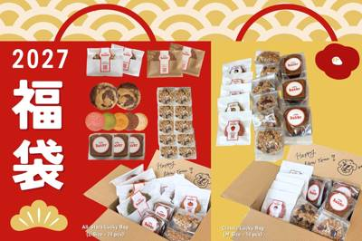
11/13 17:00 🚄 長野株式会社ovgoのプレスリリース 家族や友達と分け合える、小分けサイズの人気ベイクが集合！人気のグラノーラも1食分の使い切りサイ
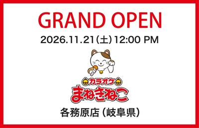
11/13 17:00 🚄 長野株式会社コシダカのプレスリリース 豪華景品が当たる大抽選会を開催！大型駐車場完備で地域の日常エンタメ拠点に 「カラオケまねきねこ
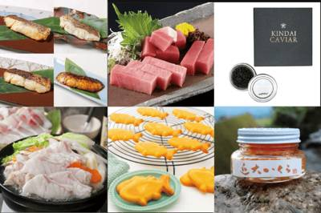
11/13 17:00 🚄 長野学校法人近畿大学のプレスリリース 「近大マグロ」などの近畿大学関連商品が、令和8年（2026年）のお歳暮商品として販売されていま
株式会社ぐるなびのプレスリリース うどんが好きな人は8割強！ 東西で分かれる麺・つゆの好みや、注目のご当地うどんも明らかに 株式
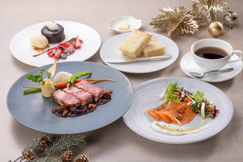
11/13 16:22 🚄 金沢株式会社ホテル金沢のプレスリリース ホテルの本格ランチコースをカジュアルに味わう、至福のランチタイム 四季折々の素材にこだわった
株式会社ニュー・オータニのプレスリリース 15年愛されるスイーツビュッフェ。あまおうショートケーキや限定のローストチキンなど、冬
株式会社イデア・レコードのプレスリリース 「予約」も「注文」も「順番待ち」も、LINEミニアプリで初期費用0円・月額固定費0円。
カッパ・クリエイト株式会社のプレスリリース ２０２６年１１月２６日（木）より、かっぱ寿司全店にて販売開始 コロワイドグループの
株式会社B.Nのプレスリリース 11月21日から翌年2月26日まで札幌・オーロラタウン小鳥の広場前へPOPUP店をオープン 韓国
株式会社トーア紡コーポレーションのプレスリリース 当社オリジナルカタログに掲載の自社グループ商品（5,000円～19,000円相
株式会社ワンダーテーブルのプレスリリース 人気レストランのこだわりの味をお得に購入できる11日間 株式会社ワンダーテーブル（本社
Ｇ－ＦＡＣＴＯＲＹ株式会社のプレスリリース 新作3種とハイボール2杯でも950円。じゃがバター、骨付き鶏のほろほろ煮も加わる秋冬
ニッカホーム株式会社のプレスリリース 瀬戸山麓牛・瀬戸豚を味わう3種類のBBQコースを提供開始。木のぬくもりを感じる全78席の店
株式会社栄通のプレスリリース 「プリロール」を運営する株式会社栄通（本社：東京都八王子市）は、『仮面ライダーシリーズ』クリスマス
株式会社SAKIGAKEホールディングスのプレスリリース 「イオンモール木更津店」のリニューアルオープンを記念し、すべてのラーメ
まん福ホールディングス株式会社のプレスリリース ～問屋直送国産ホルモンと伝統の赤酒ダレを使用。特製テールスープとご飯おかわり自由
株式会社プレジィールのプレスリリース 今年も、花とチョコレートのブランド「タルティン」が、華やかなクリスマスを彩ります。 クリス
株式会社栄通のプレスリリース 「プリロール」を運営する株式会社栄通（本社：東京都八王子市）は、『スーパー戦隊シリーズ』クリスマス
LR株式会社のプレスリリース EC支援などを行うLR株式会社（本社：鹿児島県日置市、代表：末永祐馬）は、ふるさと納税サポートを担
株式会社新越ワークスのプレスリリース 株式会社新越ワークス（代表取締役 山後佑馬 / 本社 : 新潟県燕市）スリースノー事業部は
株式会社お亀堂のプレスリリース 岩田店の季節限定「白玉ぜんざい」。小倉あんに浮かぶ３色の白玉が、寒い日のひと休みを彩ります。 1
株式会社グリーンハウスフーズのプレスリリース 仙台駅直結の新たな食の拠点『エキチカダイニング』で、変わらないおいしさをこれからも
株式会社シュクレイのプレスリリース ＜本日公開！＞ジェーン・スーさんが語る、バターバトラーが愛される理由とは？ (写真)ジェーン
株式会社ポトマックのプレスリリース 「ニュウマン高輪」South 5F。フランス発祥のお食事クレープ“ガレット”をはじめ、ランチ
カネリョウ海藻株式会社のプレスリリース ～国際会議「ICPH/ICoFF 2026」にて徳島大学との共同研究成果を発表～ 海藻の
株式会社西武・プリンスホテルズワールドワイドのプレスリリース 牛ホホ肉のプレートが付いたホリデーシーズン限定のディナーも バラが
株式会社ハイブリッジ・ジャパンのプレスリリース 北海道の食材とスープカレーの魅力を、全国そして世界へ ■ 北海道の食材を活かした
中日本エクシス株式会社のプレスリリース 最優秀賞メニューを、2026年11月21日（土）より販売開始します 中日本エクシス株式
仙台ターミナルビル株式会社のプレスリリース 新たに 『もりの道』『だての辻』登場！約20年ぶりのリニューアルで、食の魅力をさらに
株式会社ブルードのプレスリリース 〜インドをはじめとする南アジアの視聴者へ、日本の食・文化・暮らしを発信。総フォロワー数は約34
株式会社エム・ピー・ソリューションのプレスリリース ～QR専用機では“タッチ決済派”の過半数が購入断念。「かざすだけ」のスピード
株式会社パソナグループのプレスリリース 海賊料理レストラン「海神人（あまん）の食卓」内の1階「-宴-」では、冬の淡路島を代表する
株式会社 エス・エー・グループのプレスリリース パキスタン名物「鉄鍋カラヒ」と中東の米料理「マンディ」を二本柱に。本場の味を一人
東海テレビ放送株式会社のプレスリリース 2026年12月4日(金)から12月25日(金)まで、栄の久屋大通公園(エディオン久屋広
テレビ新広島のプレスリリース 漬物からソウルフードまで広島最強の“ご飯のお供” 広島で”ご飯のお供”を探
株式会社スープストックトーキョーのプレスリリース 株式会社スープストックトーキョー（本社所在地：東京都目黒区、取締役社長：工藤萌
那覇晴蒸留所のプレスリリース 今季のシークヮーサーを、今だけの香りに。 沖縄の女性蒸留家が手がける、2026年だけのクラフトジン
RX Japan合同会社のプレスリリース 観光政策、震災からの創造的復興、食と宿泊が生み出す体験価値を紹介。12月2日（水）から
株式会社そごう・西武のプレスリリース 注目は「和洋折衷」「コスパ」「推し活」「個食」「年越し」 おせち選びが本格化する時期を迎え
カゴメ株式会社のプレスリリース 自身の健康状態を知り、食生活を見直すきっかけに。尿ナトカリ比も測定！ オムロン ヘルスケア株式
株式会社ハイデイ日高のプレスリリース ～「からだすこやか茶W+祭」も同時開催～ 株式会社ハイデイ日高（本社：埼玉県さいたま市大
ヘルシーオイル・プラス・コンソーシアムのプレスリリース 脂質(油脂)栄養の役割や健康価値を発信するヘルシーオイル・プラス・コンソ
株式会社バーベキューアンドコーのプレスリリース 12月18日から冬限定プラン！4種から選べる鍋に、飲み放題も特別価格 大阪府堺市
ロイヤルホールディングス株式会社のプレスリリース 〜シンガポールでの事業承継をはじめ、アジア4か国・地域19店舗・グループ海外3
ポスタス株式会社のプレスリリース ～補助金を活用して導入できるスマートレジ「POS＋（ポスタス）」省人化ソリューションを展示し、
大淀町商工会のプレスリリース 地域の味を、新しい楽しみ方で東京へ！「おおよどSDGsチャレンジ」が小規模事業者の販路開拓を支援し
IMTエンジニアリング株式会社 NTTドコモビジネス株式会社 日比谷総合設備株式会社 NTTグリーン＆フード株式会社のプレスリリ
株式会社安楽亭のプレスリリース 焼肉レストラン安楽亭（本社：埼玉県さいたま市）は、大好評の「平日ランチ限定食べ放題コース」を、2
有限会社裕進運輸のプレスリリース 10席のカウンターで炭火焼鳥と魚介料理、ワインを楽しむ大人の隠れ家「中目黒 焼鳥B8」をオープ
Ｇｉｎｇｅｒ Ｌａｂ株式会社のプレスリリース 企業の防災備蓄を子どもの居場所の食支援につなぐ。大学生との対話・活動見学を通じ、社
株式会社天一食品商事のプレスリリース 〜創業55周年の感謝祭で盛り上がる中、こだわりの「こってりラーメン」を新たな地で〜 京都北
株式会社やまやコミュニケーションズのプレスリリース 株式会社やまやコミュニケーションズ (本社：福岡県糟屋郡篠栗町、代表取締役社
株式会社サイバーレコードのプレスリリース 株式会社サイバーレコード（本社：熊本県熊本市、代表取締役社長：増田一哉、以下「当社」）
株式会社favyのプレスリリース favyが運営する施設以外への北陸エリアでの提供は、同社として初 株式会社favy（本社：東京
いっとく株式会社のプレスリリース 食べログ百名店選出の名店が進化。創業54年の伝統が誇る「全品・厳選和牛」と「職人の手切り」、風
株式会社SAKIGAKEホールディングスのプレスリリース 「イオンモール伊達店」のオープンを記念し、京都背脂醤油ラーメンを特別価
コーヒースタイルユーシーシー株式会社のプレスリリース ～UCC直営農園産の希少なブルーマウンテンや抽出チャンピオン監修のブレンド
株式会社 TSUDA CONSTRUCTION COMPANYのプレスリリース クリスマスカラーのクリームとスパイスクッキーのパ
味の素株式会社のプレスリリース ～「アミノバイタル®」などの製品提供と栄養・コンディショニングサポートで、世界での挑戦に伴走～
マリンフーズ株式会社のプレスリリース 世界に広がるSUSHI文化を担う新たな仲間を歓迎 マリンフーズ株式会社（以下「マリンフー
株式会社ホテル金沢のプレスリリース 能登の恵みを活かした本格セイボリーも充実。殻付き牡蠣グラタンや芳醇な「ビーフティー」で温まる
全国農業協同組合連合会 兵庫県本部のプレスリリース JA全農兵庫・美菜恋来屋・コープこうべが連携し、地産地消を推進します！ JA
株式会社クリーク・アンド・リバー社のプレスリリース ▲「POPUP CAFE」キービジュアル 株式会社クリーク･アンド･リバー社
株式会社 彩雲堂のプレスリリース 累計120万部を突破した和菓子ミステリー小説『和菓子のアン』。物語に登場する和菓子が、職人たち
一般社団法人 日本たまごかけごはん研究所のプレスリリース 「卵フェスin東京2026」が11/27(金)〜29(日)に池袋 サン
メルティングポットハラペコラボ株式会社のプレスリリース 定番人気の「こうぶつヲカシと和紅茶セット」を、企業やアーティストの世界観
株式会社Cake.jpのプレスリリース ～全国4か所の商業施設でも11月15日より順次販売～ 株式会社Cake.jp（本社：東京
株式会社一蘭のプレスリリース 株式会社一蘭では、日頃のご愛顧への感謝を込め、「味集中カウンター型 卓上カレンダー2027」を進呈
サンエックス株式会社のプレスリリース ～2026年11月13日（金）より販売予定～ サンエックス株式会社（本社：東京都千代田区）
カンフェティ（ロングランプランニング株式会社）のプレスリリース 公益財団法人いたみ文化・スポーツ財団、伊丹市主催、『平野レミ×山
株式会社 大泉工場のプレスリリース 自社農場で栽培した旬の新生姜を皮ごとコールドプレスで搾汁。フレッシュで爽やかな辛味に、シナモ
有限会社リアライズプラニングのプレスリリース パチパチキャンディ入り「ライフガードクランチチョコ」2026年11月24日新発売
マリオット・インターナショナルのプレスリリース 着席スタイルのほかスタンディングプランが今年より追加、最上階スカイバー「エスカリ
モエ ヘネシー ジャパン株式会社のプレスリリース 醸造最高責任者 ヴァンサン・シャプロンが紐解く、新ヴィンテージに込めた哲学 北
アソビシステム株式会社のプレスリリース みんなで育てる「参加型モンスターツリー」や限定メニュー、クリスマス仕様の体験コンテンツが
株式会社コシダカのプレスリリース 【プロに勝てばダーツ半額】ダーツエリア「Play Garden」誕生！有名プロとの対戦イベント
日清オイリオグループ株式会社のプレスリリース ～ボランティア参加やブース出展等で盛り上げる～ 日清オイリオグループ株式会社（社
DotDeli株式会社のプレスリリース 焼きいもから絶品スイーツまで！おいもの魅力がぎゅっと詰まった3日間！ 2026年11月2
株式会社菜花の里のプレスリリース 株式会社菜花の里(所在地：千葉県成田市)は、同社が運営する京葉道路 Pasar幕張上り線「旬撰
日本ホテル株式会社のプレスリリース 伝統の神楽のオマージュメニューや宮崎牛のステーキも登場 ホテルメトロポリタン 川崎（運営／
ENGAWA株式会社のプレスリリース 2026年12月4日(金)～18日(金)の期間限定。11種類の特別なコーヒーを店内で味わえ
株式会社くるめしのプレスリリース ～職人仕立ての手作りおにぎりが、ビジネスやイベントの新たな一日の活力に～ 国内最大級の法人向け
インフィニア株式会社のプレスリリース ～地域とともに秋葉原の環境美化を推進。街の魅力を守る取り組みに参加～ インフィニア株式会社
SAKANA&JAPAN FESTIVAL実行委員会のプレスリリース 同時開催 魅力いっぱい！ ふくしまフェスティバル
学校法人 昭和女子大学のプレスリリース 昭和女子大学（学長 金尾朗：東京都世田谷区）現代ビジネス研究所が運営するプロジェクト型
アマン東京のプレスリリース アマン東京 (東京・千代田区大手町、総支配人 八木朋子)では、2026年のフェスティブシーズンに向け
株式会社カプコンのプレスリリース 【カプコン直営店舗関連情報】 2026年11月28日(土)より、カプコンカフェ池袋店と梅田店の
株式会社プレナスのプレスリリース 12月13日（日） 東京・茅場町オフィスで開催 株式会社プレナス（本社：中央区銀座、社長執行
アンダーズ 東京のプレスリリース ミシュランガイド東京で二つ星掲載の「エスキス」が約6週間限定で登場 リオネル・ベカが描く「いの
時地人 – JIJIJIN Matsuyamaのプレスリリース 愛媛の食の発信地「時地人 – JIJIJIN Mat
株式会社クラウン・パッケージのプレスリリース 容器の役割を、環境への取り組みを発信するコミュニケーションツールへ 環境配慮型パッ
コープデリ生活協同組合連合会のプレスリリース ～ 全81ブースが出展。大即売会＆試食会、行政や地域のNPOの活動紹介、親子で楽し
株式会社PROJECT963のプレスリリース 極上本まぐろ丼や佐世保バーガー、黒糖アガラサーが集結。道の駅やまがた蔵王（ぐっと山
株式会社ギンビスのプレスリリース ～税込3,000円以上のお買い上げで「社員証」をプレゼント～ 株式会社ギンビス（本社：東京都中
株式会社TWIN PLANETのプレスリリース 今夏開催『たべっ子どうぶつ MIRAI LAB. ～星降るキラリウム～』のグッズ
寄居町商工会のプレスリリース 地域ブランド「里山八珍」認定の淡雪芋けんぴを手がける「おいものすぎ屋」が、農業×加工×販売の6次産
明海グループ株式会社のプレスリリース 12月12日（土）・13日（日）の2日間限定開催。クリスマスデザートやホテル自慢の料理を食
食の宝庫あおもりプロジェクトのプレスリリース クリスマス時期にりんごに親しむキャンペーン「Happy APPLE Holiday
 11/13 16:00
🚄 名古屋
11/13 16:00
🚄 名古屋
アメリカ大豆輸出協会のプレスリリース ・納豆の世界進出と、持続可能な大豆食品の未来を考える国際イベント アメリカ大豆輸出協会
ベースフード株式会社のプレスリリース 完全栄養※1の主食等を開発・販売するベースフード株式会社（本社：東京都港区、代表取締役：橋
クックデリ株式会社のプレスリリース お出汁ワークショップや、ビジネスマナー体験などの企画が充実 高齢者施設向けに完全調理済みの安
株式会社エフシイズのプレスリリース 駒沢オリンピック公園 中央広場「茨城をたべよう収穫祭」（入場無料）イベント内「みどり・つなげ
株式会社NEO FLAG.のプレスリリース 年に一度の社内行事をケータリングで手軽に。フリードリンクとのセットで1名あたり400
公益社団法人 新潟県観光協会のプレスリリース ラポルテ五泉で見つけたニットアイテム、見事に再建された日枝神社の大鳥居、県内No.
株式会社クリエイト・レストランツ・ホールディングスのプレスリリース ６枚綴りの珈琲チケット（通常税込2,700円）が税込2,20
サーラ不動産株式会社のプレスリリース 〜東三河の“推し農家”と出会い、旬を味わい尽くす。食と農のスペシャルコラボレーション〜 ホ
株式会社 伝食のプレスリリース 海産物を中心とした通信販売・店頭販売・飲食・水産加工事業を手掛ける株式会社伝食（本社：福井県敦賀
UNCHI株式会社のプレスリリース 「人類みな麺類コラボシリーズ」に、大阪・新町の「and Roll」が参加。西中島と新町の両店
株式会社京阪流通システムズのプレスリリース 3日間で合計22店舗が集結！ 各店自慢のスペシャリテが京阪シティモールに勢揃い。
株式会社ベルコのプレスリリース 落語家赤米氏による寄席を開催 豪華景品が当たる抽選会やメモリアルフォト撮影会など地域参加型イベン
マリオット・インターナショナルのプレスリリース 冬限定の「特選海鮮しゃぶしゃぶ」をはじめ、クリスマスディナーやおせち料理、特別な
黒門市場商店街振興組合のプレスリリース 黒門市場で初めてブラックフライデーセールを開催、ブラックな特別メニューが登場 黒門市場商
トゥモローゲート株式会社のプレスリリース フランス総領事館の公邸料理人の経験をもつ、トゥモローゲート株式会社のシェフ・山吹が、企
 11/13 11:39
🚄 東北
11/13 11:39
🚄 東北
LH 株式会社のプレスリリース 出張カキ小屋 牡蠣奉行（かきぶぎょう）：牡蠣小屋実行委員会 【協賛】サッポロビール株式会社 東北
カネテツデリカフーズ株式会社のプレスリリース 11月14日開催「カネテツフェス2026」にて公開 2026年3月6日に創業100
伊藤ハム米久ホールディングス株式会社のプレスリリース 大阪のグルメや素材とポークビッツがタイアップ！ あなたなら、どれ食べる？
株式会社西武・プリンスホテルズワールドワイドのプレスリリース ホワイトクリスマス×北海道グルメ 新富良野プリンスホテル（所在地：
アイコニア・ホスピタリティ株式会社のプレスリリース 関西最大級の温泉型テーマパーク「空庭温泉 OSAKA BAY TOWER」
パルシステム生活協同組合連合会のプレスリリース プリプリ食感を水餃子やガーリック炒めで堪能 生活協同組合パルシステム山梨 長野（
パルシステム生活協同組合連合会のプレスリリース 採れたてを特製カレーにして交流 生活協同組合パルシステム群馬（本部：高崎市中大類
株式会社テンポスホールディングスのプレスリリース 人気の旨辛鍋やクリーミーな鍋など、気分に合わせて選べる全5種類！1人前税抜69
株式会社暮らしと珈琲のプレスリリース 暮らしと珈琲がプロデュースする初のベーカリーカフェを岡山市役所２階にオープン。それを記念し
インフィニア株式会社のプレスリリース ～開催17年目を迎える大阪の都市型フェスティバルに出演。メイドによるステージパフォーマンス
食の宝庫あおもりプロジェクトのプレスリリース 産地視察や夏のメニューフェアを振り返り、県産食材の新たな魅力と可能性を語る井上シェ
那須千本松牧場のプレスリリース ～紅葉、牧場グルメ、栃木ワインを楽しむ秋～ ホウライ株式会社（本社：東京都中央区、代表取締役社長
株式会社R-LAB.のプレスリリース 〜福島産ゆず×愛知産抹茶の限定「Irish Coffee -結 YUI-」やスペシャルティ
下呂商工会のプレスリリース ～ 下呂温泉の食べ歩きに新たな楽しみを♪ 新感覚のヨーグルト体験 ～ 下呂温泉の温泉街に、ヨーグルト
三和酒類株式会社のプレスリリース 2027年グローバルファイナル出場へ 古瀬氏 優勝トロフィーを掲げる姿 三和酒類株式会社（本
サンクトガーレン有限会社のプレスリリース 昨冬は1か月で約500食を販売。ビールが隠し味ではなく、だしの主役 サンクトガーレン有
株式会社ナツメ社のプレスリリース ロングセラー『最新版 日本酒完全バイブル』が、情報を大幅にアップデートして登場。日本酒の基礎知
株式会社かみなり舎のプレスリリース 東京駅で行列の絶えない「PARIS BUTTER CHOCOLAT」から、シャンパンを使用し
北海道ワイン株式会社のプレスリリース ～香港の「GWSAA 2026」でも銀賞2点・銅賞4点を獲得し、アジア市場で計8賞の快挙～
Viña San Pedro Tarapacá S.A.のプレスリリース 南米の権威あるワインガイドで97点獲得、カベルネ・ソー
reth株式会社のプレスリリース ⻑野県⼩⾕村×ユナイテッドアローズ×HAKUBA CRAFT 三者共同開発 ふるさと納税返礼品
観光マネジメントボード遠野のプレスリリース 2026年に採れた遠野産生ホップを急速凍結し醸造に使用した、今しか飲めないビールを味
株式会社イズミセのプレスリリース 予約販売で反響続々。作品の電脳世界をイメージした鮮烈なブルーのリキュール。11⽉10⽇発売「攻
DAISEN HAKKO PROJECT推進協議会のプレスリリース 鳥取の地酒と地元グルメを一度に満喫！おつまみプレート付き、造
株式会社2TAPSのプレスリリース 〜長崎県産本マグロを使用！職人の技が光る握り“食べ尽くし５貫セット”特別価格で提供〜 まずは
株式会社DREAMBEERのプレスリリース 株式会社DREAMBEER（本社：東京都港区、代表取締役：萩尾 陽平）は、2026年
株式会社ベストホスピタリティーネットワークのプレスリリース 煌びやかな表参道イルミネーションを一望する絶景ロケーションで一足早く
Dining For You株式会社のプレスリリース 毎年恒例の人気企画を今年も開催。ここでしか聞けない楽しい野球談義をお届けし
株式会社小林順蔵商店のプレスリリース SAKE INITIE POP UP SHOP at CROSS HOTEL OSAKA
株式会社名鉄ホテルホールディングスのプレスリリース 時を超えて響き合う美食と戦国武将の名を冠した美酒に酔いしれながら、兵（つわも
株式会社 FS.shakeのプレスリリース 博多のもつ鍋や名物おでんを気軽に楽しめる大衆酒場が沖縄市に。個室も完備し、3日間限定
株式会社エスエルディーのプレスリリース 「立って、聴いて、喰らう。」――上質なサウンド、60種を超える本格タパス、ワインセルフ飲
株式会社アップライジングのプレスリリース 超大吉は入手困難な「白州18年」。大大吉に「山崎12年」、大吉に「白州12年」を揃えた
株式会社GORILLA COMPANYのプレスリリース 〜神奈川県産の新しい酒米「吟のさと」を使った、2,000ℓ限定の希少酒も
音源: Original audio
Five clips, five moods, one very real emotional arc. Creators title the video “5 stages of being...” (a mom, a student, a small business owner, you name it), then take us from confident and hyped to fully overwhelmed and ready to quit. It’s relatable chaos that works for pretty much any niche.
One camera spot, a bunch of looks, zero jump-scare edits. Creators lock the camera in place and use a simple movement to swap from one outfit to the next, set to Britney Spears. Chef’s kiss for fashion creators, boutiques, and any brand with a closet to flex.
音源: Original audio
The day-in-the-life timestamp trend, but make it one appointment. Instead of your whole day, take us from walking in to walking out, whether it’s a manicure, a facial, or a fresh cut. Especially great for service-based businesses, because it’s basically a satisfying behind-the-scenes in disguise.